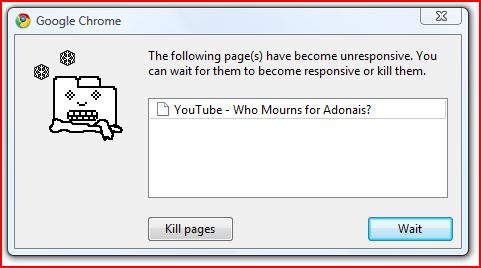

So, I’m trying to get an episode of ST:TOS on Youtube and the rights-management requires an upgraded Flash Player on this laptop and that borks Firefox for some reason, so I figure I’ll give Chrome a try because it just happens to be built by the people that own Youtube.


Guess what innovative feature I get to try out?
This entry was posted on Saturday, June 5th, 2010 at 4:40 PM and is filed under Buckeye. You can follow any responses to this entry through the RSS 2.0 feed. Both comments and pings are currently closed.